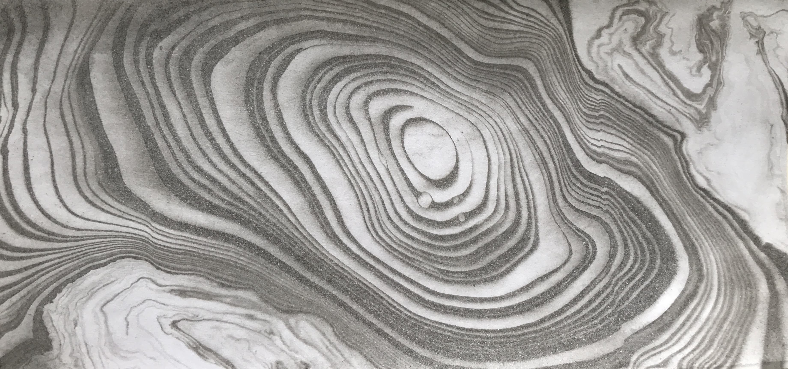
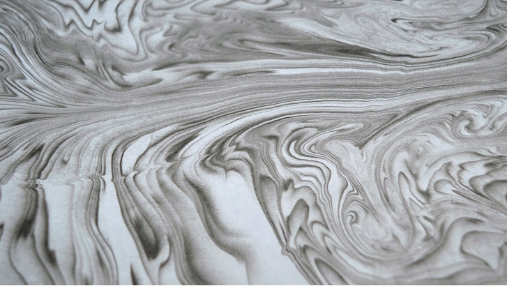
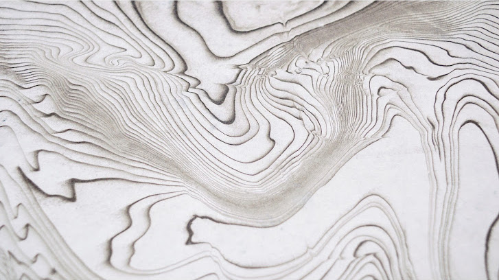

Above is a video of my process when practising Suminagashi.
Suminagashi is the ancient Japanese art of balancing ink on water and gently adding paper to create a print.
I was inspired to try out this technique after practising traditional paper marbling, but in a city-centre flat the chemicals used for this were messy and strong-smelling. Suminagashi uses only a few simple materials and creates beautiful results.
Here is a gallery showcasing my Suminagashi prints:


